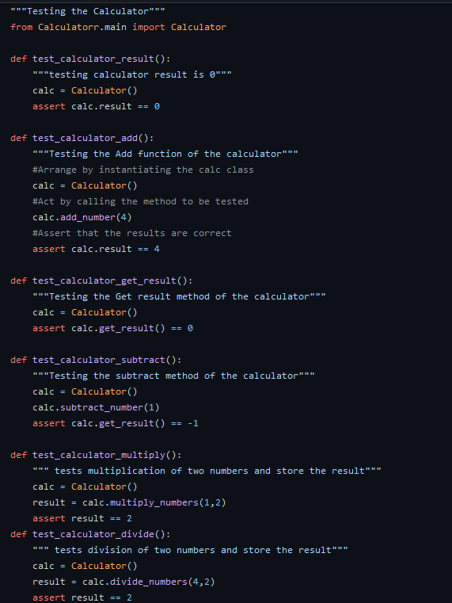

AAA Testing
First you want to arrange your inputs and targets. Then you want to take a step back and see what it is that you are actually arranging and set up the test case. Does the test require any objects or special settings? Does it need to prepare a database? Does it need to log into a web app? Handle all of these operations at the start of the test.
After doing this you start the action portion of AAA testing. This portion covers the main thing that is being tested. This could be calling a function or method, calling a REST API, or interacting with a web page. Keep actions focused on the target behavior.
Then you Assert the expected outcomes. This step should verify the content and accuracy of the Act steps. Sometimes, assertions are as simple as checking numeric or string values. Other times, they may require checking multiple facets of a system. Assertions will ultimately determine if the test passes or fails.
